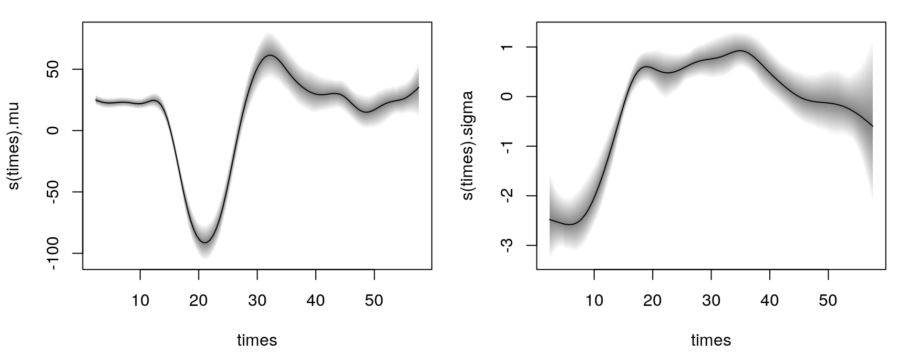
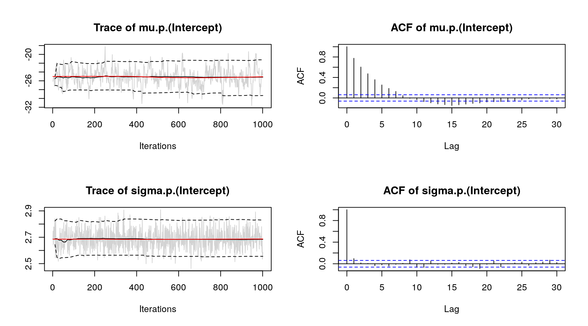
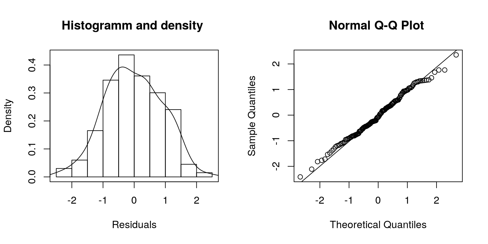
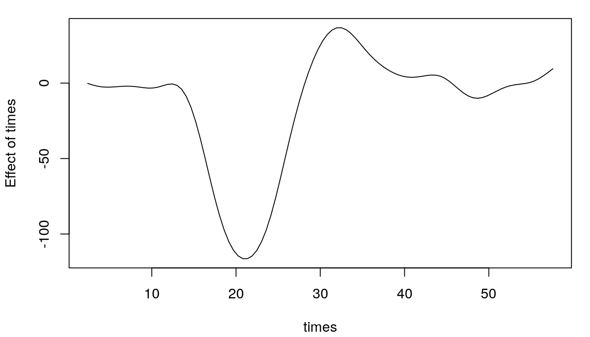

bamlss.RmdThe R package bamlss provides a modular computational framework for distributional regression models (and beyond). The implementation follows the conceptional framework presented in Umlauf, Klein, and Zeileis (2017), which supports Bayesian and/or frequentist estimation engines using complex possibly nonlinear model terms of any type. The highlights of the package are:
formula specifies how to set up the predictors from the data and family objects provide information about the response distribution.model.frame along with the corresponding prior structures. A transformer can optionally set up modified terms, e.g., using mixed model representation for smooth terms.optimizer function can be run, e.g., for computing posterior mode estimates. Second, a sampler is employed for full Bayesian inference with MCMC, which uses the posterior mode estimates from the optimizer as staring values. An additional step can be used for preparing the results.The stable release version of bamlss is hosted on the Comprehensive R Archive Network (CRAN) at https://CRAN.R-project.org/package=bamlss and can be installed via
install.packages("bamlss")The development version of bamlss is hosted on R-Forge at https://R-Forge.R-project.org/projects/bayesr/ in a Subversion (SVN) repository. It can be installed via
install.packages("bamlss", repos = "http://R-Forge.R-project.org")As a startup on how to use bamlss, we illustrate the basic steps on a small textbook example using the well-known simulated motorcycle accident data (Silverman 1985). The data contain measurements of the head acceleration (in \(g\), variable accel) in a simulated motorcycle accident, recorded in milliseconds after impact (variable times). To estimate a Gaussian location-scale model with \[
\texttt{accel} \sim \mathcal{N}(\mu = f(\texttt{times}), \log(\sigma) = f(\texttt{times}))
\] we use the following model formula
f <- list(accel ~ s(times, k = 20), sigma ~ s(times, k = 20))where s() is the smooth term constructor from the mgcv (Wood 2018). Note, that formulae are provided as lists of formulae, i.e., each list entry represents one parameter of the response distribution. Also note that all smooth terms, i.e., te(), ti(), etc., are supported by bamlss. This way, it is also possible to incorporate user defined model terms. A full Bayesian model is the estimated with
library("bamlss")
data("mcycle", package = "MASS")
b <- bamlss(f, data = mcycle, family = "gaussian",
n.iter = 12000, burnin = 2000, thin = 10)using 12000 iterations for the MCMC chain, a burnin of 2000 (dropped samples) and a thinning of 10, i.e., only every 10th sample is saved. Note that per defaul bamlss() uses a bachfitting algorithm to compute posterior mode estimates, afterwards these estimates are used as starting values for the MCMC chains. The returned object is of class "bamlss" for which generic extractor functions like summary(), plot(), predict(), etc., are provided. For example, the estimated effects for distribution paramaters mu and sigma can be visualized by
 The model summary gives
summary(b)##
## Call:
## bamlss(formula = f, family = "gaussian", data = mcycle, n.iter = 12000,
## burnin = 2000, thin = 10)
## ---
## Family: gaussian
## Link function: mu = identity, sigma = log
## *---
## Formula mu:
## ---
## accel ~ s(times, k = 20)
## -
## Parametric coefficients:
## Mean 2.5% 50% 97.5% parameters
## (Intercept) -25.13 -29.34 -25.17 -21.24 -25.14
## -
## Smooth terms:
## Mean 2.5% 50% 97.5% parameters
## s(times).tau21 425513.52 170191.50 390995.34 916762.06 209333.1
## s(times).alpha 1.00 1.00 1.00 1.00 NA
## s(times).edf 14.20 12.54 14.14 15.97 13.6
## ---
## Formula sigma:
## ---
## sigma ~ s(times, k = 20)
## -
## Parametric coefficients:
## Mean 2.5% 50% 97.5% parameters
## (Intercept) 2.686 2.555 2.684 2.830 2.581
## -
## Smooth terms:
## Mean 2.5% 50% 97.5% parameters
## s(times).tau21 1.227e+02 1.243e+01 9.737e+01 4.346e+02 81.399
## s(times).alpha 5.312e-01 4.299e-04 5.026e-01 1.000e+00 NA
## s(times).edf 8.981e+00 5.599e+00 9.001e+00 1.240e+01 8.675
## ---
## Sampler summary:
## -
## DIC = 1115.567 logLik = -545.856 pd = 23.8553
## runtime = 42.485
## ---
## Optimizer summary:
## -
## AICc = 1123.881 converged = 1 edf = 24.2716
## logLik = -531.9752 logPost = -747.4101 nobs = 133
## runtime = 0.88
## ---showing, e.g., the acceptance probabilities of the MCMC chains (alpha), the estimated degrees of freedom of the optimizer and the successive sampler (edf), the final AIC and DIC as well as parametric model coefficients (in this case only the intercepts). Using MCMC involves convergence checks of the sampled parameters. The easiest diagnostics are traceplots
plot(b, which = "samples") Note that this call would show all traceplots, for convenience we only show the plots for the intercepts. In this case, the traceplots indicate convergence of the Markov chains. Further inspections are the maximum autocorrelation of all parameters, which = "max-acf", besides other convergence diagnostics, e.g., diagnostics that are part of the coda package (Plummer et al. 2006).
Inspecting randomized quantile residuals (Dunn and Smyth 1996) is useful for judging how well the model fits to the data
 Randomized quantile residuals are the default method in bamlss, which are computed using the cdf function of the corresponding family object.
The posterior mean function for new data based on MCMC samples for parameter \(\mu\) can be computed by
nd <- data.frame("times" = seq(2.4, 57.6, length = 100))
nd$p <- predict(b, newdata = nd, model = "mu", FUN = mean)
plot2d(p ~ times, data = nd) where argument FUN can be any function, e.g., a function computing credible intervals from the empirical quantiles of the MCMC samples
foo <- function(x) {
quantile(x, probs = c(0.025, 0.5, 0.975))
}
nd$p <- predict(b, newdata = nd, model = "mu", FUN = foo)
print(head(nd))## times p.2.5% p.50% p.97.5%
## 1 2.400000 -2.2685517 -0.3338592 2.0121098
## 2 2.957576 -2.4032723 -1.2167286 0.2256118
## 3 3.515152 -3.3582048 -1.9752305 -0.7446184
## 4 4.072727 -4.0285472 -2.4734314 -1.0844792
## 5 4.630303 -4.3516868 -2.6297711 -1.1780513
## 6 5.187879 -4.1810407 -2.5654621 -1.1680551Dunn, Peter K., and Gordon K. Smyth. 1996. “Randomized Quantile Residuals.” Journal of Computational and Graphical Statistics 5 (3). American Statistical Association, Institute of Mathematical Statistics,; Interface Foundation of America: pp. 236–44. doi:10.2307/1390802.
Plummer, Martyn, Nicky Best, Kate Cowles, and Karen Vines. 2006. “Coda: Convergence Diagnosis and Output Analysis for MCMC.” R News 6 (1): 7–11. doi:10.18637/jss.v021.i11.
Silverman, B. W. 1985. “Some Aspects of the Spline Smoothing Approach to Non-Parametric Regression Curve Fitting.” Journal of the Royal Statistical Society. Series B (Methodological) 47 (1). [Royal Statistical Society, Wiley]: 1–52. http://www.jstor.org/stable/2345542.
Umlauf, Nikolaus, Nadja Klein, and Achim Zeileis. 2017. “BAMLSS: Bayesian Additive Models for Location, Scale and Shape (and Beyond).” Journal of Computational and Graphical Statistics. doi:10.1080/10618600.2017.1407325.
Umlauf, Nikolaus, Nadja Klein, Achim Zeileis, and Thorsten Simon. 2018. Bamlss: Bayesian Additive Models for Location Scale and Shape (and Beyond). http://CRAN.R-project.org/package=bamlss.
Wood, S. N. 2018. Mgcv: GAMs with Gcv/Aic/Reml Smoothness Estimation and Gamms by Pql. https://CRAN.R-project.org/package=mgcv.